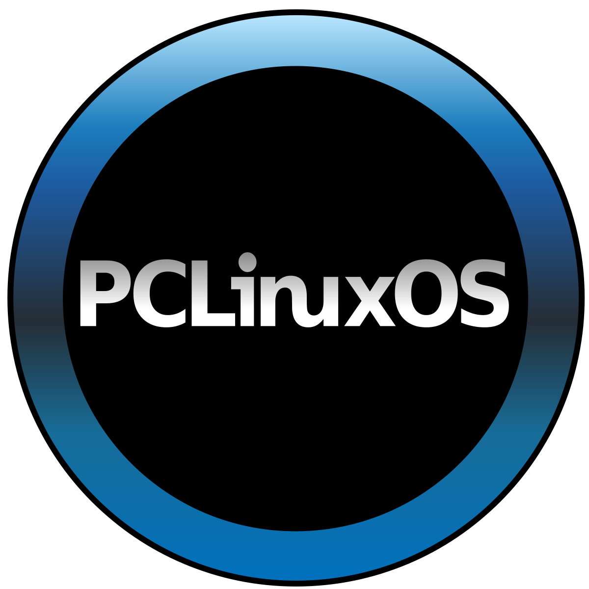

LINKS DE ISO

.png "Descarga Solaris")

Para GoboLinux, se recomienda utilizar la descarga por HTTP
Manuales de Instalación
Manuales de Información
VIDEOS DE INSTALACION

Cómo instalar SteamOS, aquí
Cómo instalar Debian, aquí
Cómo instalar Lubuntu, aquí
Cómo instalar Solaris, aquí
Cómo instalar OpenSUSE, aquí
Cómo instalar PCLinux, aquí
o aquí
Cómo instalar Puppy, aquí
Cómo instalar GoboLinux, aquí
Cómo instalar Windows 10 Enterprise, aquí
Cómo instalar Windows Mobile, aquí
Cómo instalar Fedora, aquí
Cómo instalar Yosemite, aquí